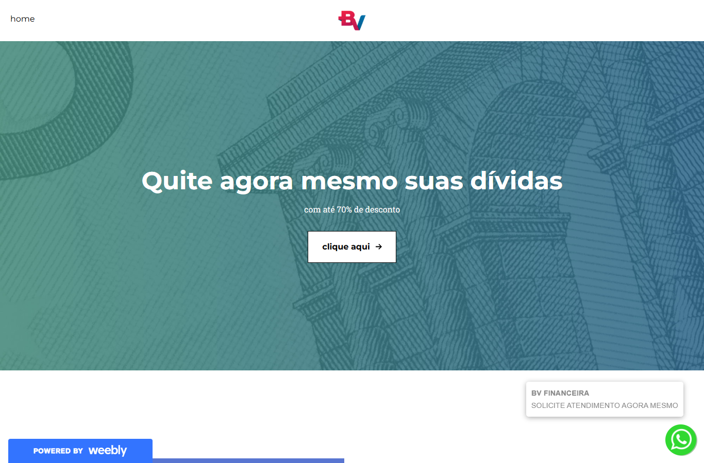
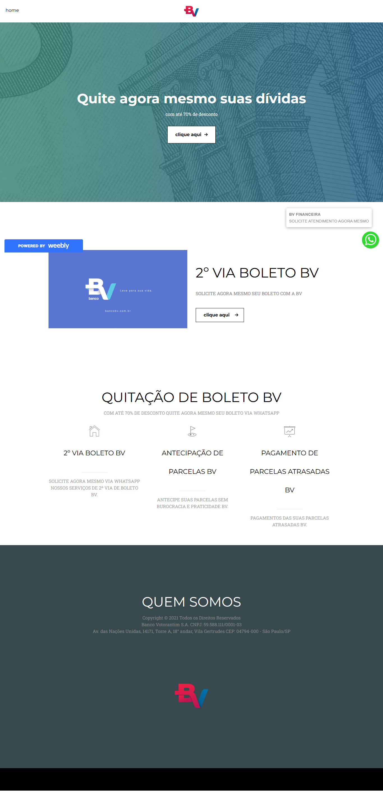

SIMIO · dossiê de candidato · campanha simio-20261119-174043-8bbc · gerado em 2026-11-19T21:22:03+00:00
https://assessoriapositiva001.weebly.com/
STRONG_INDICATION Prioridade HIGH · Cenário D_STRONG_IMPERSONATION · Revisão humana: PENDING
Este dossiê apresenta indícios para apoio à auditoria. Não constitui conclusão regulatória. As conclusões automatizadas devem ser verificadas contra as evidências brutas abaixo (screenshots, catálogo e arquivos com hash). Conteúdo de terceiros é exibido como texto; links não são clicáveis por segurança.
A página analisada (assessoriapositiva001.weebly.com) configura forte indício de personificação (D_STRONG_IMPERSONATION). Embora hospedada em plataforma gratuita sob subdomínio que remete a uma assessoria, toda a comunicação visual e textual apresenta-se como se fosse o próprio Banco BV. O site utiliza exclusivamente a logomarca da instituição, oferece serviços críticos de pós-venda (2ª via de boleto, quitação com desconto e antecipação de parcelas via WhatsApp), intitula seu chat como 'BV FINANCEIRA' e exibe na seção 'QUEM SOMOS' o CNPJ (59.588.111/0001-03), a razão social e o endereço oficial do próprio Banco Votorantim S.A., ocultando completamente a identidade do terceiro responsável. [Revisor: CONFIRM] As evidências sustentam integralmente a conclusão do analista de forte indício de personificação (STRONG_INDICATION). A página está hospedada em domínio não oficial (weebly.com), utiliza exclusivamente a identidade visual e logotipos do Banco BV, oferece serviços sensíveis de cobrança (2ª via de boleto, quitação com até 70% de desconto e antecipação de parcelas via WhatsApp), identifica seu widget de atendimento como 'BV FINANCEIRA' e apropria-se diretamente da razão social, endereço e CNPJ (59.588.111/0001-03) do Banco Votorantim S.A. na seção 'QUEM SOMOS', sem declarar qualquer vínculo de correspondente ou identidade empresarial própria.


| Ref | Tipo | Local | Conteúdo |
|---|---|---|---|
| E-URL | domain | url | URL final: https://assessoriapositiva001.weebly.com/ (domínio: assessoriapositiva001.weebly.com) |
| E-DISC-001 | text | search_index | Índice de busca (grounding): weebly.com — **Fonte:** `weebly.com` (Subdomínio identificado na busca com o título *"BV FINANCEIRA"*) | **Falsa Central de Quitação e 2ª Via BV (Weebly 2)** | **Fonte:** `weebly.com` (Título *"MY SITE - BV FINANCEIRA"*) |
| E-SHOT-VIEWPORT | screenshot | viewport | evidence\Cc0b08cf354\attempt-1\viewport.png (sha256 90c74c62b9ea0da9…) |
| E-SHOT-FULL | screenshot | page | evidence\Cc0b08cf354\attempt-1\fullpage.png (sha256 28390a5af9c86efb…) |
| E-TITLE | title | head | MY SITE - Home |
| E-META-1 | meta | head | og:site_name: MY SITE |
| E-META-2 | meta | head | og:title: MY SITE |
| E-META-3 | meta | head | og:description: SOLICITE AGORA MESMO SEU BOLETO COM A BV |
| E-HEAD-1 | heading | page | Quite agora mesmo suas dívidas |
| E-HEAD-2 | heading | page | 2º VIA BOLETO BV |
| E-HEAD-3 | heading | page | QUITAÇÃO DE BOLETO BV |
| E-HEAD-4 | heading | page | 2º VIA BOLETO BV |
| E-HEAD-5 | heading | page | ANTECIPAÇÃO DE PARCELAS BV |
| E-HEAD-6 | heading | page | PAGAMENTO DE PARCELAS ATRASADAS BV |
| E-HEAD-7 | heading | page | QUEM SOMOS |
| E-FOLD | text | viewport (acima da dobra) | Home BV FINANCEIRA SOLICITE ATENDIMENTO AGORA MESMO Quite agora mesmo suas dívidas com até 70% de desconto CLIQUE AQUI Powered by |
| E-CTA-1 | cta | page | clique aqui <javascript:;> |
| E-CTA-2 | cta | page | clique aqui <javascript:;> |
| E-CTA-3 | cta | page | Get Started |
| E-CONTACT-1 | contact | page | Enviar Mensagem <https://web.whatsapp.com/send?phone=11900000000> |
| E-CONTACT-2 | contact | page | Enviar Mensagem <https://wa.me/11900000000> |
| E-CONTACT-3 | contact | page | Feito no WhatsWidget <https://www.adamante.com.br/code/whatsapp-site/> |
| E-IMG-1 | image | page (acima da dobra) | imagem alt='MY SITE' src=https://assessoriapositiva001.weebly.com/uploads/1/3/6/4/136490423/logo-bv-financeira-2048.png (60x60, acima da dobra) |
| E-IMG-2 | image | page | imagem alt='Picture' src=https://assessoriapositiva001.weebly.com/uploads/1/3/6/4/136490423/published/logo-bv-financeira-2048.png?1614738252 (136x136, abaixo da dobra) |
| E-TXT-001 | text | page | BV FINANCEIRA |
| E-TXT-002 | text | page | SOLICITE ATENDIMENTO AGORA MESMO |
| E-TXT-003 | text | page | 2º VIA BOLETO BV |
| E-TXT-004 | text | page | SOLICITE AGORA MESMO SEU BOLETO COM A BV |
| E-TXT-005 | text | page | QUITAÇÃO DE BOLETO BV |
| E-TXT-006 | text | page | COM ATÉ 70% DE DESCONTO QUITE AGORA MESMO SEU BOLETO VIA WHATSAPP |
| E-TXT-007 | text | page | 2º VIA BOLETO BV |
| E-TXT-008 | text | page | SOLICITE AGORA MESMO VIA WHATSAPP NOSSOS SERVIÇOS DE 2º VIA DE BOLETO BV. |
| E-TXT-009 | text | page | ANTECIPAÇÃO DE PARCELAS BV |
| E-TXT-010 | text | page | ANTECIPE SUAS PARCELAS SEM BUROCRACIA E PRATICIDADE BV. |
| E-TXT-011 | text | page | PAGAMENTO DE PARCELAS ATRASADAS BV |
| E-TXT-012 | text | page | PAGAMENTOS DAS SUAS PARCELAS ATRASADAS BV. |
| E-TXT-013 | text | page | Banco Votorantim S.A. CNPJ: 59.588.111/0001-03 |
| E-TXT-014 | text | page | Av. das Nações Unidas, 14171, Torre A, 18° andar, Vila Gertrudes CEP: 04794-000 - São Paulo/SP |
| Dimensão | Sinal | Achado | Refs |
|---|---|---|---|
| VISUAL_IDENTITY | CONFUSION | A página adota exclusivamente elementos visuais e logotipos do Banco BV como identidade principal, sem qualquer identidade visual de terceiro. | E-SHOT-VIEWPORT E-SHOT-FULL |
| DECLARED_COMMERCIAL_IDENTITY | CONFUSION | Na seção 'QUEM SOMOS', a página declara ser 'Banco Votorantim S.A. CNPJ: 59.588.111/0001-03' com o endereço oficial da instituição, e o botão de atendimento se intitula 'BV FINANCEIRA'. | E-HEAD-7 E-TXT-001 E-TXT-013 E-TXT-014 E-SHOT-FULL |
| CORRESPONDENT_TRANSPARENCY | CONFUSION | Não há nenhuma menção à atuação como correspondente no País, assessoria de cobrança ou parceiro comercial independente em toda a extensão da página. | E-SHOT-FULL |
| INSTITUTIONAL_LANGUAGE | CONFUSION | A linguagem atua em primeira pessoa ('NOSSOS SERVIÇOS DE 2º VIA DE BOLETO BV', 'SOLICITE AGORA MESMO SEU BOLETO COM A BV') assumindo a posição da própria instituição financeira. | E-TXT-004 E-TXT-008 |
| LOGO_USAGE | CONFUSION | O logotipo oficial do Banco BV é utilizado de forma isolada no topo da página, em banner intermediário (que exibe inclusive o endereço 'bancobv.com.br') e no rodapé. | E-IMG-1 E-IMG-2 E-SHOT-VIEWPORT E-SHOT-FULL |
| SERVICE_JOURNEY | CONFUSION | A jornada é inteiramente voltada à captação de clientes buscando emissão de 2ª via de boleto, quitação de contrato com desconto e antecipação de parcelas. | E-HEAD-1 E-HEAD-2 E-HEAD-3 E-HEAD-5 E-HEAD-6 E-TXT-006 |
| CONTACT_CHANNELS | CONFUSION | O atendimento é direcionado para WhatsApp por meio de widget flutuante que usa o título 'BV FINANCEIRA', operando em domínio gratuito de terceiros (weebly.com). | E-URL E-TXT-001 E-TXT-002 E-CONTACT-1 E-CONTACT-2 E-SHOT-VIEWPORT |
| CONSUMER_CONFUSION | CONFUSION | Altíssimo risco de confusão para o consumidor e potencial fraude de boleto, pois a página se apresenta integralmente como o Banco BV/Votorantim, exibe os dados cadastrais oficiais do banco e capta clientes para emissão de boletos via WhatsApp. | E-SHOT-FULL E-TXT-001 E-TXT-008 E-TXT-013 |
A página analisada (assessoriapositiva001.weebly.com) configura forte indício de personificação (D_STRONG_IMPERSONATION). Embora hospedada em plataforma gratuita sob subdomínio que remete a uma assessoria, toda a comunicação visual e textual apresenta-se como se fosse o próprio Banco BV. O site utiliza exclusivamente a logomarca da instituição, oferece serviços críticos de pós-venda (2ª via de boleto, quitação com desconto e antecipação de parcelas via WhatsApp), intitula seu chat como 'BV FINANCEIRA' e exibe na seção 'QUEM SOMOS' o CNPJ (59.588.111/0001-03), a razão social e o endereço oficial do próprio Banco Votorantim S.A., ocultando completamente a identidade do terceiro responsável.
Nenhum CNPJ ou razão social identificáveis no conteúdo coletado.
| Tipo | Valor | Ref | Contexto |
|---|---|---|---|
| domain | weebly.com | E-URL | |
| cnpj | 59.588.111/0001-03 | E-TXT-013 | Banco Votorantim S.A. CNPJ: 59.588.111/0001-03 |
| institution_name_displayed | Banco Votorantim S.A | E-TXT-013 | |
| phone | 11900000000 | E-CONTACT-1 | |
| Enviar Mensagem <https://web.whatsapp.com/send?phone=11900000000> | E-CONTACT-1 | ||
| Enviar Mensagem <https://wa.me/11900000000> | E-CONTACT-2 | ||
| Feito no WhatsWidget <https://www.adamante.com.br/code/whatsapp-site/> | E-CONTACT-3 |
Mapeamento indicativo para apoio à auditoria. Não constitui conclusão regulatória; a decisão definitiva pertence à auditoria.
Fonte: NORMATIVE
Art. 14. O contrato de correspondente deve estabelecer: [...] II - vedação à utilização, pelo contratado, de logomarca ou de outros atributos que sejam similares aos adotados pela instituição contratante em suas agências, postos de atendimento, sítio eletrônico na internet, aplicativo ou outras plataformas de comunicação em rede;
Hipótese: Uso de logomarca ou de atributos similares aos adotados pela contratante em seus canais. A norma disciplina correspondentes contratados; o responsável não foi identificado como correspondente.
Evidência observada: E-IMG-1 E-IMG-2 E-SHOT-FULL E-SHOT-VIEWPORT
Informação faltante:
Fonte: NORMATIVE
Art. 14. O contrato de correspondente deve estabelecer: [...] III - divulgação ao público, pelo contratado, de sua condição de prestador de serviços à instituição contratante, identificada pelo nome com que é conhecida no mercado, com descrição dos produtos e serviços oferecidos e canais de contato da instituição contratante, inclusive de sua ouvidoria, em local visível, em destaque e em formato legível, por meio de: a) sítio eletrônico do correspondente na internet, acessível na página inicial; b) aplicativo e outras plataformas de comunicação em rede do correspondente; [...]
Hipótese: Divulgação ao público da condição de prestador de serviços à contratante ausente, insuficiente ou sem destaque. A norma disciplina correspondentes contratados; o responsável não foi identificado como correspondente.
Evidência observada: E-CONTACT-1 E-CONTACT-2 E-HEAD-7 E-SHOT-FULL E-SHOT-VIEWPORT E-TXT-001 E-TXT-002 E-TXT-004 E-TXT-008 E-TXT-013 E-TXT-014 E-URL
Informação faltante:
Fonte: NORMATIVE
Art. 3º O correspondente atua por conta e sob as diretrizes da instituição contratante, que assume inteira responsabilidade pelo atendimento prestado aos clientes e usuários por meio do contratado.
Hipótese: Atendimento ao público prestado por meio do contratado em condições que podem não seguir as diretrizes da contratante. A norma disciplina correspondentes contratados; o responsável não foi identificado como correspondente.
Evidência observada: E-CONTACT-1 E-CONTACT-2 E-HEAD-1 E-HEAD-2 E-HEAD-3 E-HEAD-5 E-HEAD-6 E-SHOT-VIEWPORT E-TXT-001 E-TXT-002 E-TXT-006 E-TXT-008 E-URL
Informação faltante:
Se o responsável não for correspondente contratado, os indícios podem caracterizar uso indevido de marca ou fraude, fora do escopo da Res. 4.935: avaliar encaminhamento às áreas jurídica/segurança.
Limitações: requisitos contratuais/internos não fornecidos: mapeamento limitado ao texto normativo
Decisão: CONFIRM → STRONG_INDICATION / HIGH
As evidências sustentam integralmente a conclusão do analista de forte indício de personificação (STRONG_INDICATION). A página está hospedada em domínio não oficial (weebly.com), utiliza exclusivamente a identidade visual e logotipos do Banco BV, oferece serviços sensíveis de cobrança (2ª via de boleto, quitação com até 70% de desconto e antecipação de parcelas via WhatsApp), identifica seu widget de atendimento como 'BV FINANCEIRA' e apropria-se diretamente da razão social, endereço e CNPJ (59.588.111/0001-03) do Banco Votorantim S.A. na seção 'QUEM SOMOS', sem declarar qualquer vínculo de correspondente ou identidade empresarial própria.
| Tema | Severidade | Questionamento | Refs |
|---|---|---|---|
| evidence_sufficiency | LOW | Os links de WhatsApp visíveis no código contêm um número genérico/placeholder (11900000000) e os botões principais utilizam 'javascript:;', o que pode indicar uma página incompleta/abandonada ou que o número real de redirecionamento é carregado dinamicamente por script após o clique. Contudo, a estrutura visual e textual da página já materializa a personificação da marca. | E-CONTACT-1 E-CONTACT-2 E-CTA-1 E-CTA-2 |
| domain_attribution | MEDIUM | Responsável pela página não identificado; a conclusão sobre a marca não pode ser atribuída a um estabelecimento específico. | E-URL |
| Fonte | Consulta / hipótese | URL original | Título / trecho |
|---|---|---|---|
| grounding | perfis, páginas ou links públicos em Google Meu Negócio mantidos por terceiros que oferecem financiamento, quitação ou crédito usando a marca Banco BV (bv financeira) como se fossem um canal oficial ou representante direto do banco H6-platform:Google Meu Negócio | https://assessoriapositiva001.weebly.com/ | weebly.com **Fonte:** `weebly.com` (Subdomínio identificado na busca com o título *"BV FINANCEIRA"*) | **Falsa Central de Quitação e 2ª Via BV (Weebly 2)** | **Fonte:** `weebly.com` (Título *"MY SITE - BV FINANCEIRA"*) |
Original: https://assessoriapositiva001.weebly.com/
Final: https://assessoriapositiva001.weebly.com/
| Artefato | Caminho | SHA-256 | Bytes |
|---|---|---|---|
| screenshot_viewport | evidence\Cc0b08cf354\attempt-1\viewport.png | 90c74c62b9ea0da9a7742b913741a27864aa4f6688bd2a0fa705a5f349373ff7 | 692212 |
| screenshot_full | evidence\Cc0b08cf354\attempt-1\fullpage.png | 28390a5af9c86efba58bc22339e7ce71fc38e916c0cf6ad282839df401bbf628 | 829368 |
| html | evidence\Cc0b08cf354\attempt-1\page.html.txt | d9f158e581fb2a57c4dec7f26d5ae4436a00df0507a3d620b7d7c01d9f76d69c | 85154 |
| text | evidence\Cc0b08cf354\attempt-1\text.txt | f7dbb036744e958f2a436951636c581449cde2469db766b7b0ac2a0fd077670f | 838 |
| page_data | evidence\Cc0b08cf354\attempt-1\page.json | 8b26d750a46d7905c314f0a2ccb66d4fe022023c13f2f0f6aad83b622599e992 | 6154 |
| Quando | De | Para | Nota |
|---|---|---|---|
| 2026-11-19T18:10:10+00:00 | DISCOVERED | QUEUED | prioritised (score 2.5) |
| 2026-11-19T18:15:18+00:00 | QUEUED | COLLECTING | |
| 2026-11-19T18:15:29+00:00 | COLLECTING | COLLECTED | |
| 2026-11-19T18:15:29+00:00 | COLLECTED | ANALYZING | |
| 2026-11-19T18:16:14+00:00 | ANALYZING | REVIEWING | |
| 2026-11-19T18:16:27+00:00 | REVIEWING | COMPLETED |